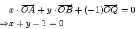

| |
【例題】：
- (1)
- P, Q, R 三點共線的向量條件式：
設 P, Q, R 三點共線，O 是任選之原點，即如 [圖 5-6] 所示：
[ 圖 5-6 ]
則存在實數 k，使得
，亦即
換言之，存在有不全為零的系數 α, β, γ 滿足
反之，若存在滿足上述條件的 α, β, γ（設
），即有
- (2)
- 用向量代數証明 Menelous 定理：
[ 圖 5-7 ]
令
,
,
。首先，由 A, B, Q
三點共線的向量條件式，即有

再者，由 P, Q, R 三點共線的向量條件式，即有
由此解得
所以
即得
- (3)
- 重心和 Ceva 定理：
[ 圖 5-8 ]
設
分別為質量
的三個質點的位置向量，則其重心的位置向量就是
其中 mi 是 Pi 的質量百分比（亦即
m1+m2+m3=1）。若改用重心作為原點，則
滿足條件式
由
 得 得
這其實乃是 Ceva 定理在「力學」中的表現。
- (4)
- 圓冪定理的向量証法：
設  為過 P 點的直線，與圓交于 Q1, Q2 兩點。令 X 為
上的一個動點， 是沿 方向的單位長向量。 為過 P 點的直線，與圓交于 Q1, Q2 兩點。令 X 為
上的一個動點， 是沿 方向的單位長向量。
[ 圖 5-9 ]
易見有
由此可見，直線 上的動點 X 恰好位于以 O 為圓心，半徑為
R 的圓上的條件式就是
上述二次方程式的兩個根 , 也就是
和
的有向長度。所以
第一式的幾何意義就是
第二式的幾何意義是什麼呢？
令 P' 是 上使得 (PP',Q1Q2) 成調和點列之點，亦即
設
，則有
所以
上述向量代數式的幾何意義就是：
在直線 OP
上的垂直投影是一個固定的向量，亦即和 無關。
[ 圖 5-10 ]
【習題】：
- (1)
- 試驗証在例題 (1) 中當 的條件換成
或 時，同樣結論亦成立。
設  , ,  是空間中兩條（相異）直線，
,
為線上給定的（相異）四點。令 X1, X2 分別為 ,
上的動點，則容易把 是空間中兩條（相異）直線，
,
為線上給定的（相異）四點。令 X1, X2 分別為 ,
上的動點，則容易把
 改寫成下述形式： 改寫成下述形式：
- (2)
- 問
同時垂直于 ,
的代數條件式是什麼？
- (3)
- 試討論在什麼的情況下這個公垂線段
是
- (i)
- 唯一存在的，而且其長度不為 0；
- (ii)
- 唯一存在的，但是其長度為 0；
- (iii)
- 並非唯一存在的。
- (4)
- 令
 為題 (3)(i) 情形中的公垂線段。試証這是所有
中的最短者。 為題 (3)(i) 情形中的公垂線段。試証這是所有
中的最短者。
|
|
|